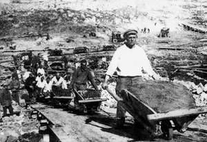
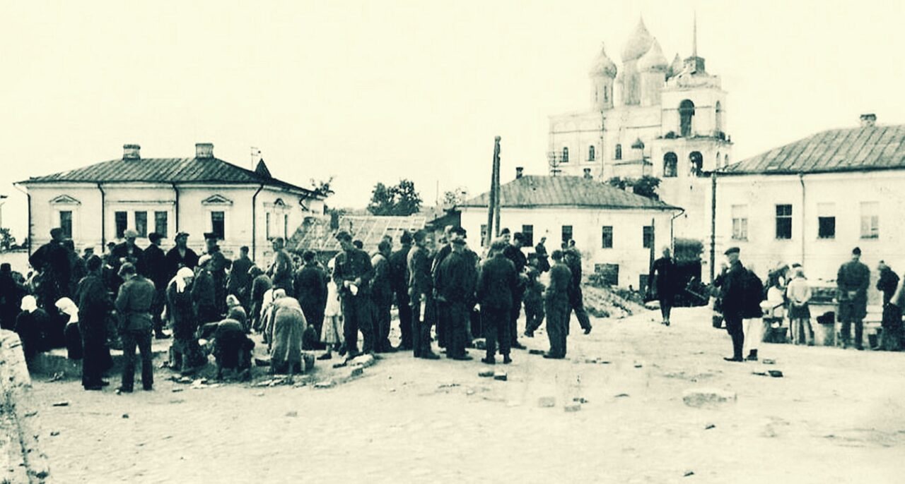

Воспоминания Галины Ивановны Голдованской (Столяровой).
Дед ( по линии отца ) Столяров Алексей Алексеевич (1885 – 1937). Имел водяную мельницу, при мельнице имелись крупорушка и щеподралка. Собирался выпускать деревянную «черепицу», которой покрывали купола церквей. (Я не помню, как в архитектуре правильно называют такую «черепицу».)
5 человек детей: три сына и две дочери, но младшая девочка погибла под бомбёжкой в первые дни войны. Обязательно была лошадь, а то и две (одна рабочая, другая выездная). Корова, овцы, куры. На два-три месяца нанимал двух-трёх работников: убрать урожай, накосить сена и пр. Все мои родственники очень любили лошадей. Жеребят отпаивали особым поилом: овёс запаривали молоком. Лошадь—это необходимость и в работе, и на отдыхе. Устраивали скачки, катание на тройках и просто доехать до соседнего хутора или мызы. В тех краях жили и эстонцы, и поляки. Мать моего деда была эстонкой, но звалась Марией Семёновной. Умела изготовить различные сорта пива и колбас. Это кулинарное искусство она усвоила от своего деда- немца (имени его не знаю).
Мой отец мальчиком воспитывался у бабушки (она не доверяла внука молодой невестке) и видел в подвале бочонки с пивом. Деда вспоминали как энергичного делового человека, разбирающегося во всех хитростях не только мукомольной техники. А его брату Степану захотелось летать на аэропланах-самолётах. Он отправился в первую лётную школу, прошёл отбор и был зачислен. (Под Петербургом? Гатчина?). Успешно учился . Был выдан особый чёрный кожаный костюм: бриджи, куртка, перчатки. Однажды в таком костюме он приезжал домой. В 1912-ом или в 1913-ом году он закончил лётную школу. Писал, что в честь празднования 300-летия Дома Романовых присвоят офицерский чин и дадут дворянское звание. Дали или нет – неизвестно.
В 1914-ом году началась Первая мировая война. Вероятно, он погиб, потому что никаких вестей от него больше не было. Дед Алексей Алексеевич тайно надеялся, что Степан с белыми где-нибудь в Европе, и всё ждал весточки. Алексей Алексеевич тоже служил в армии, был в Первой мировой войне. В 20-ом году против воли оказался в походе Тухачевского на Польшу. Это был полный разгром, и дед говорил, что чудом остался жив и маленькой группой вышли из окружения. (Всё это я пересказываю воспоминания его сына Ивана Алексеевича.)
(Я где-то читала, что Николай II возлагал большие надежды на авиацию и специально для первых лётчиков заказал чёрные кожаные костюмы, но этими костюмами воспользовались чекисты. По советским фильмам часто видели, как чекисты щеголяют в кожанках. А в предисловии к «Книге воспоминаний Вел. Кн. Александра Михайловича» читаем: «Чтя имена Жуковского, Можайского и Нестерова, мы не знали имени воистину отца российской авиации—Вел. Кн. Александра Михайловича». Это так—лирическое отступление.)
Особенно хочу подчеркнуть, что дед был очень талантливым человеком. Прекрасно пел, свободно играл на гармоне, баяне, аккордеоне. Судя по всему, в округе была широко развита самодеятельность. Однажды с группой дед, ещё молодым человеком, был отправлен в Петербург. Думаю, это было похоже на современную «Минуту славы». Он исполнял классические вещи на музыкальном инструменте, который соорудил сам: это были разные бутылки, и вода в них была налита на разном уровне. Из всей группы он один получил особую награду—именные часы. Мама- эстонка поощряла занятия музыкой, но была строга и частенько запирала аккордеон в сундук, приговаривая: «Делу—время, потехе – час».
Потом начались страшные времена: коллективизация, ссылки…людей уводили и они исчезали. Старший сын Иван был уже взрослым (1911г.р.), но как спасать четверых, малолетних (Мария 1925г.р. Николай 1926г.р., Пётр 1928г.р., Надежда 1930г.р.). Дед написал (когда?) заявление, где передавал государству мельницу, весь инвентарь, скот… Но однажды ночью пришёл хороший знакомый и сказал, что все члены семьи в списке на выселку и утром придут всех забирать. Куда - неизвестно. В ту же ночь дед запряг лошадь, погрузил семью, узлы и покинул свои родные места. Он оказался в Дедовичском районе, устроился на государственную мельницу.
А его сын Иван едет в Ленинград. После строгого отбора ему удаётся поступить в ЗОТ. Советской власти не хватало специалистов, поэтому открыли школы или курсы ЗОТ (завладение отечественной техникой). Успешно проучился год. Накануне получения аттестата его вызывают (куда?) и приказывают в 24 часа покинуть Ленинград. С какой формулировкой - не знаю. Отец его Ал. Ал. приезжал в Ленинград в надежде что-то изменить, устроить сына - всё бесполезно. Иван немного поработал с отцом на государственной мельнице, часто приезжал по работе в Псков. С моей мамой был знаком давно, в Пскове снова встретились. В октябре 1934г. поженились, а в начале 1935г. ему дают 10 лет и отправляют на Беломорканал. Условия жуткие, люди мрут, как мухи. Но в 37-ом ему удаётся с общих работ перейти в КИС—контрольно-испытательную станцию. Туда поступило много заграничных электромоторов, различных электроприборов, электроначинка для трансформаторов… Отец с благодарностью вспоминал ЗОТ: все эти электро… были его профиль, но главное—появилась надежда выжить, потому что условия в КИС были лучше. Эта профессия помогла ему много позднее, когда он оказался в ленинградских Крестах.
Группу заключённых возили на завод медицинского оборудования где-то на Петроградской стороне. Отец занимался медицинскими электроприборами.
В 1939г. за хорошую работу его освобождают досрочно, т. е. Беломорканал он строил 5 лет.
Свобода!!! Мне было 4 годика, когда произошла первая встреча с отцом. Был ноябрь, выпал обильный снег, и меня отправляют гулять, кататься на санках с папой. Но для меня было неизвестно понятие «папа». Это был чужой, незнакомый дядька. Мне хотелось плакать, убежать, спрятаться. Это горькое мучительное чувство я помню до сих пор. А через несколько дней его отправляют на Финскую войну. Я думаю, освободили потому, чтобы отправить на войну.
Очень жаль, что Алексей Алексеевич не дождался возвращения сына. Несправедливость и жестокость подкосили его, он умер в 1937 году и похоронен в Железницах Дедовичского района. Плиту с его именем на могилу поставил его сын Николай в 50-ые годы. Жена Ал. Ал . Наталья Фёдоровна осталась нищей с четырьмя детьми. Устроилась работать в больницу, не гнушаясь никакой работы: мыла, стирала, гладила, была нянечкой…. Она вырастила хороших, работящих детей. Мама Алексея Алексеевича Мария Семёновна пережила своих сыновей Алексея и Степана и похоронена на кладбище, которое находится между Заречьем и Спасовщиной.
Мой дед (по линии матери) Егоров Павел Егорович (1890 – 1958).
Это был человек исключительной порядочности, честности, добрый и светлый. Был очень начитан. Благоговейное отношение к книге шло с детских лет от деда- шведа и матери. Родился он в Закрупичье Гдовского района. Мама его Прасковья Осиповна была сельским фельдшером- акушеркой. Лечила травами. Умерла перед войной. Это была ранняя весна, распутица, и где было трудно проехать, несли гроб на руках, приговаривая: «Все в округе прошли через её руки, а теперь эти люди на своих руках несут её в последний путь». Похоронена в Мельницах справа от церкви.
На чердаке остались висеть многочисленные холщёвые мешочки с травами, кореньями, в сундуке нашли книги по-латыни с рисунками органов человека.
А в шкафу художественная литература и стопка журнала «Нива».
(У Прасковьи Осиповны было трое сыновей: Пётр, Павел и Алексей).
Воспитывала трёх девочек-племянниц: Марфу, Наталью и Ирину и ещё одного или двух приёмных мальчиков. Один стал врачом.
Наталья и Ирина были отправлены учиться в Петербург на медицинские курсы при женском Иоановском монастыре (кажется, на Песочной улице, на Карповке.) У меня есть фото Ирины в монашеском одеянии.
Она закончила учёбу с высокими баллами и работала хирургической медсестрой, ассистентом хирурга при операциях. Вышла замуж за хирурга- шведа. Очень не хотела покидать Россию, но в 33-ем уехали в Финляндию.
Это было незадолго до покушения на Кирова, после чего было уже невозможно выехать. А что было бы дальше, страшно подумать. Дедушка так и умер, ничего не зная о сестре. И только в 90-ые годы приезжала Лидочка- дочь Ирины и рассказала, что её мама очень тосковала по России и умерла перед войной. Сурова судьба младшего брата дедушки, Алексея. Он был осуждён на 15 лет и отправлен в шахты Воркуты. С ним в Воркуте сидел его троюродный брат Степан Кузьмин. Степан и написал письмо (когда уже можно было писать), как болел и умер Алексей Егорович через 2 г., похоронен в общей могиле неизвестно где – в Воркуте. Степан умер на родине вскоре после возвращения.
Профессия моего деда П. Е.—инженер- землеустроитель лесопаркового хозяйства. А работал он объездчиком. В его ведении была огромная территория лесов Гдовского района. Ездил на двуколке или верхом на лошади. Было трое детей: Вера(1913г.р.), Валя (1915), Люба (1922).
Начал строить дом (Когда?), фундамент из больших тёсаных камней. Предполагалось, что в доме будет много высоких окон и мансарда. Уже перебрались в угловую комнату. Но началась коллективизация, это было своеобразное продолжение гражданской войны. Дважды, когда дедушка уезжал, а бабушка была одна с детьми, ночью приходили незваные гости, начинали стрелять в собаку, в окна, рвались в конюшню. Бабушка стреляла из двух окон, из одного только браунингом, из другого только ружьём, чтобы создать впечатление, что в доме она не одна. Оставаться было опасно, а многих друзей и знакомых забирали и выселяли. Пришлось всё бросить. То красивое место заросло непроходимым лесом, но фундамент из тёсаных валунов остался, как памятник (Кому? Чему? – каждый волен думать о своём).
Дедушка с семьёй едет в Спасовщину, работает в леспромхозе, но и тут он видит, как выселяют целыми семьями, арестовывают чаще всего самых честных, порядочных (часто вспоминал поляка Черняк Петра Кононовича и его сестру Марию Кононовну). Переезжают в Псков, Октябрьский 27. Комната (позднее 2) в коммунальной квартире из четырёх-пяти семей, но люди были очень хорошие. В этом доме я родилась, и здесь прошло моё раннее детство.
Очень хорошо помню моих маленьких друзей: Вовку Кузьмина и Владьку Дымова, которые были чуть постарше меня, но они никогда не обижали. Мы весело катались на кухне на моём велосипеде, который купил дедушка. После войны мы встретились как родные. Помню ещё старика с огромной седой шевелюрой. Он часто приглашал меня в свою маленькую комнату, усаживал на стол, который был завален какими-то железками, приборчиками, книжками. И чем-нибудь угощал. Я не помню его имя и отчества, но помню фамилию Нах. А мама вспоминала, как Нах при соседях вздыхал и говорил: «Ах, Верочка, будь я помоложе, предложил бы тебе руку и сердце». (Интересно, успел ли он уехать или погиб где-нибудь в концлагере).
А мой дедушка устроился работать на хлебозавод бухгалтером. Приходя с работы, он наклонялся, подставляя карман, и говорил: « Посмотри, что тебе прислала лисичка». И я находила конфетку или яблочко, или пряничек.
21 октября 2012 года, воскресенье. Псков. Галина Голдованская
